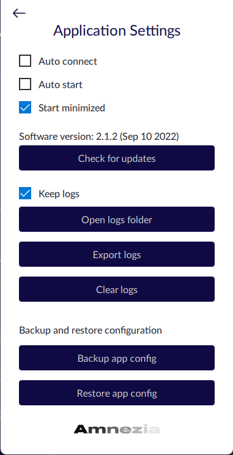

Описание интерфейса приложения
РусскийRu

App settings - настройки приложения

“Auto connect” - автоматическое
подключение при открытии приложения
“Auto start” -
автоматический запуск приложения при запуске устройства
“Start minimised” - автоматическое открытие приложения в
свернутом состоянии при запуске устройства
“Check for updates” -
проверка наличия обновлений. Ссылка на GitHub с последними релизами.
Над кнопкой указана версия приложения и дата релиза этой версии
“Keep logs” - включение логирования внутри приложения
“Open logs folder” - просмотр папки с логами. Ведет к открытию папки на устройстве,
в которой сохраняются логи клиента, если включено логирование
“Export logs” - выгружает файл логов
“Clear logs” - очищает лог файл
“Back up app config” - создать бэкап для восстановления конфигурации приложения
“Restore app config” - восстановить сохраненную конфигурацию из файла
Network settings - настройка и смена DNS
“Use AmneziaDNS service” -
включение/отключение использования установленного DNS контейнера
“Primary/Secondary DNS server” - смена DNS адресов
Server Settings - настройки сервера

“Protocols and services” - ведет на экран со всеми доступными для
установки и уже установленными контейнерами, где вы можете:
- вручную переключиться между протоколами (галочка возле протокола)
- удалить установленные контейнеры (кликнуть на название контейнера, затем кликнуть на крестик)
- перенастроить установленные контейнеры (кликнуть на название контейнера, а затем на шестеренку)
- установить новые(нажать на “Install new protocols container”
“Share server(Full access)” - ведет на
новый экран, позволяющий сгенерировать
конфигурацию для пользователя с полным доступом к настройке
сервера (кэша клиента)
“Clear client cached profile” - очистка кэша клиента
“Clear server from Amnezia software” - очистка серверов от всех контейнеров, установленных клиентом
“Forget this server” - удалить данные
о сервере
Share connection - поделиться VPN
“Share connection” - дает возможность сгенерировать конфигурацию текущего протокола и поделиться ей с другим пользователем без админского(полного) доступа:

“Share for Amnezia” - ведет к открытию следующего окна с кнопкой “Generate Config”
“Generate Config” - генерирует конфигурацию, ей можно поделиться с другим пользователем, скопировав код для подключения, в виде файла или
qr-кода. Пользователь, с которым поделились конфигурацией, может
открыть её с помощью Amnezia, данная конфигурация не работает со
сторонними приложениями.
“Share for Wireguard/OpenVPN/etc” - ведет к открытию следующего окна с кнопкой
“Generate Config”, которая генерирует конфигурацию. Ей можно поделиться с другим пользователем скопировав
код для подключения, Его можно сохранить как в виде файла, так и в виде qr-кода. Пользователь, с которым
поделились конфигурацией может открыть его с помощью сторонних приложений, например через Wireguard или OpenVPN
Servers - Серверы
“Servers” - раздел настроек приложения. Он дает возможность добавить новый сервер, перенастроить или удалить существующий, переключиться между серверами:
Кнопка “Добавить” (иконка плюса в
круге) - ведет на экран для добавления нового сервера/подключения с помощью кода подключения, файла или ручного ввода данных сервера
Иконка-галочка возле сервера - обозначает активность сервера.
Если установлено несколько серверов, то при клике на иконку, можно переключаться между серверами.
Шестеренка “Настройки” - отображается при наведении курсора на сервер. Нажатие на иконку ведет на экран “Server Settings”
Add Server - подключиться к новому серверу
Подключение к уже настроенному серверу через
Connection Code:
В строку “Connection code” вводится код
подключения в формате vpn://...
Подключение к уже настроенному серверу с
помощью файла:
“Open file” - нажатие на кнопку открывает браузер файлов, где можно выбрать нужный файл формата .config
“Set up your own server” - открывает экран для подключения к серверу, используя данные: login, ip address, пароль или ssh-ключ
Основной экран

Основной экран - появляется после подключения к серверу:
“Server” - открывает экран “Servers”
“Proto” - открывает экран с информацией
об установленных контейнерах, где также можно переключиться между уже установленными контейнерами,
удалить какой-либо контейнер или установить новый
“DNS” - ведет на экран “Network Settings” и
“How to use VPN”
“For all connections” -
использование VPN для всех сайтов и приложений
“For selected sites” - использование VPN
только для сайтов/доменов указанных в списке
“Except selected sites” -
использование VPN для всех подключений, кроме указанных в списке
При выборе “For selected sites” или “Except selected sites” становится активной кнопка “+ Add site”, нажатие на которую ведет на экран настройки следующего функционала:

Кнопка “+” - добавляет указанный в поле слева сайт в список для “For selected sites” (для выбранных сайтов) или “Except selected sites”(для всех сайтов, кроме выбранных)
“Иконка папки” - для загрузки файла
со списком для “For selected sites” (выбранных сайтов) или “Except selected sites” (сайтов исключений)
“Delete Selected” - для
удаления сайта из списка: требуется нажать на сайт из списка и затем нажать на кнопку “Delete Selected”
“Select all” - нажатие на кнопку выбирает все указанные сайты из списка
“Export all” - экспортирует список сайтов из клиента на устройство
Готово!